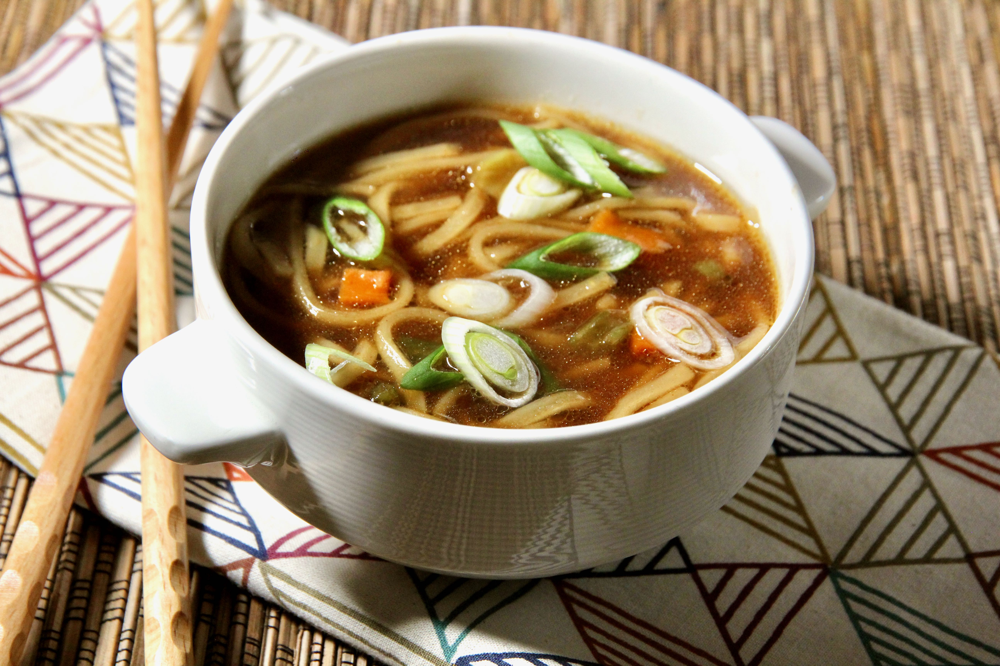

Ramen Noodle Soup Recipe

Description
Basic ramen recipe that's easy to make with simple ingredients commonly found at supermarkets or Asian grocery stores.
- Prep: 5 mins
- Cook: 10 mins
- Total: 15 mins
- Servings: 2
Ingredients
- 3 ½ cups vegetable broth
- 1 (3.5 ounce) package ramen noodles with dried vegetables
- 2 teaspoons soy sauce
- ½ teaspoon chili oil
- ½ teaspoon minced fresh ginger root
- 1 teaspoon sesame oil
- 2 green onions, sliced
Steps
- In a medium saucepan combine broth and noodles. Cover and bring to a boil over high heat; stir to break up noodles.
- Reduce heat to medium and add soy sauce, chili oil and ginger.
- Simmer, uncovered, for 10 minutes.
- Stir in sesame oil and garnish with green onions.
Source
Ramen Noodle Soup Recipe | Allrecipes